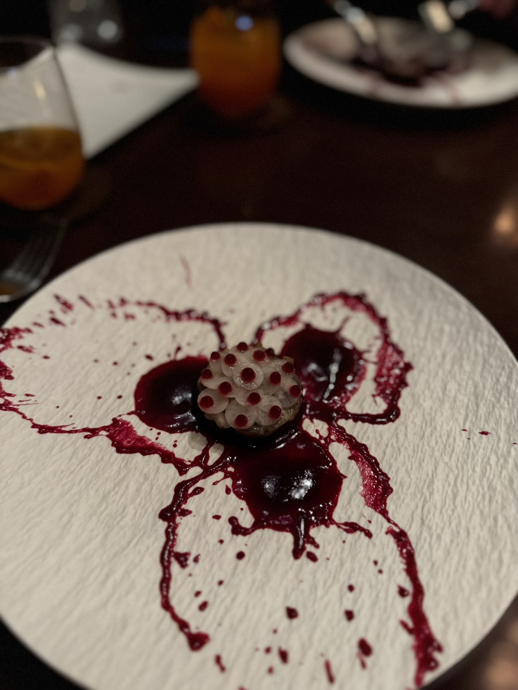
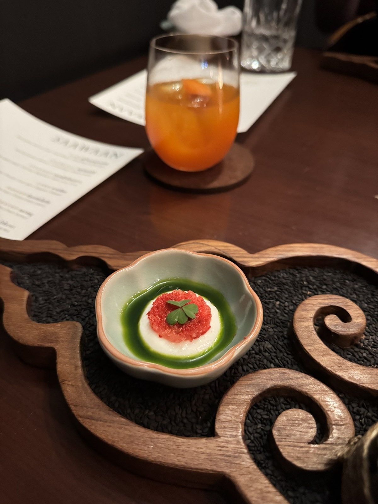
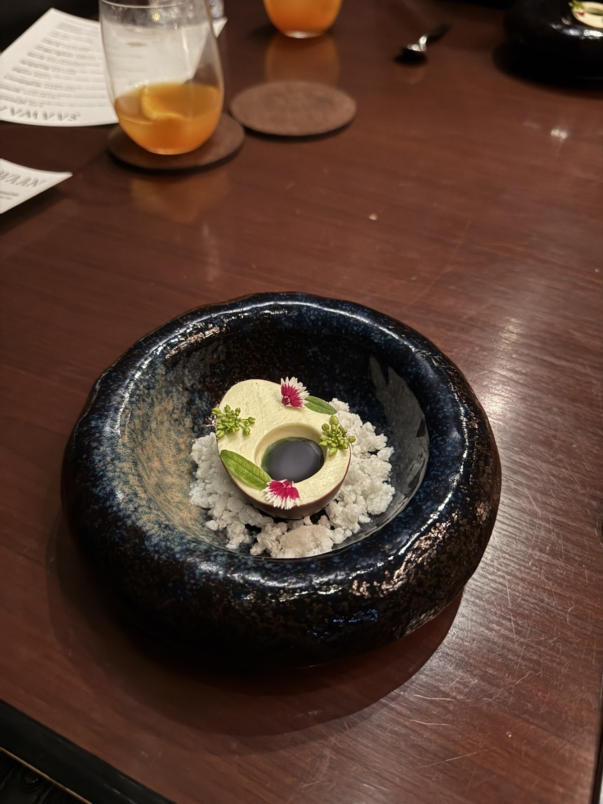
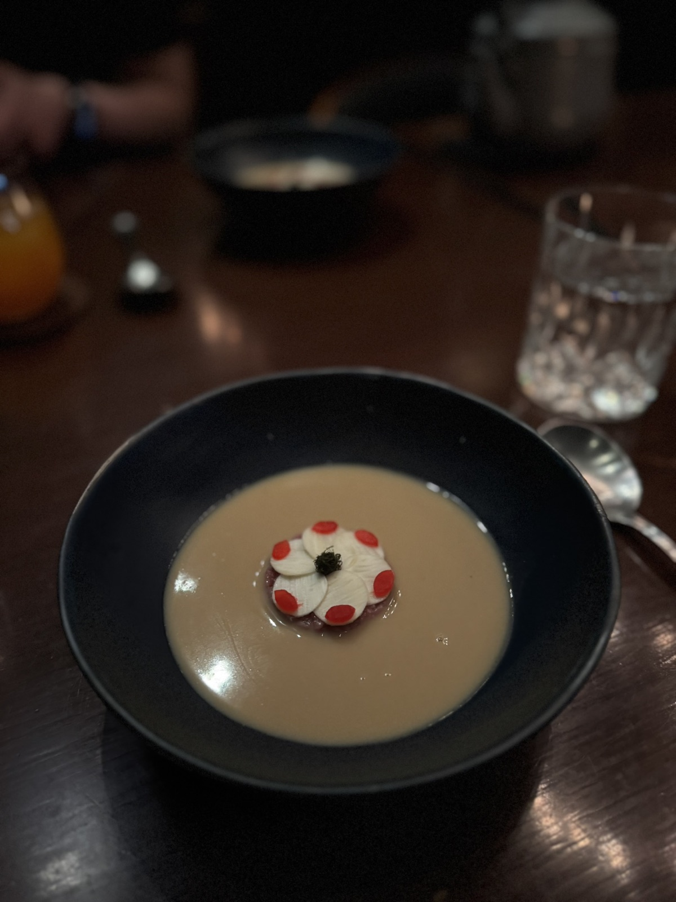
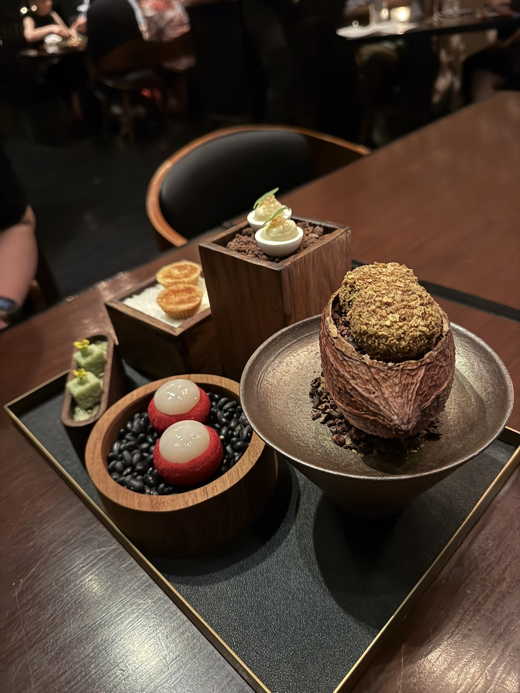
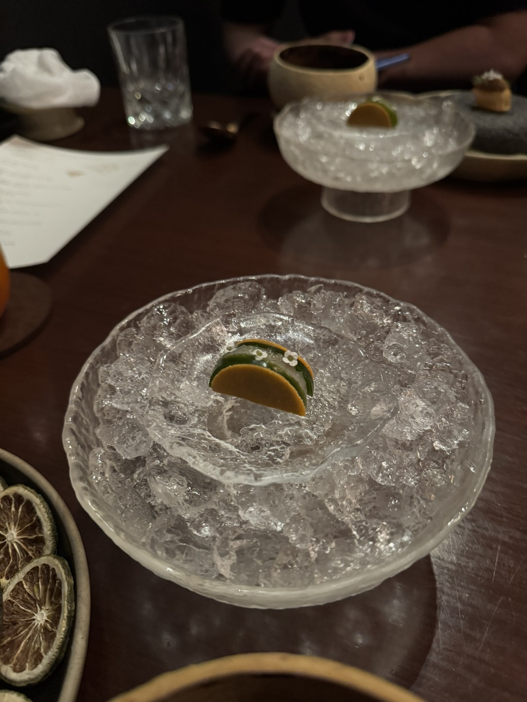

Price
Set menu at 2,790 THB++ per person, with wine pairing at 1,990 THB++.
Food Review / Bangkok / 17 Jan 2026
A Bangkok dinner-date set menu with polished technique, great service, and a few excellent highs. Larb and Fermented stayed with me most; Raw was the weakest; overall it landed at a careful 7.7/10.
The menu was 2,790 THB++ per person, with wine pairing at 1,990 THB++. It felt unique and well-crafted, but taste-wise the whole meal was just okay overall, with a few dishes clearly pulling the experience up.

Saawaan is the kind of fine dining dinner where I respected the work immediately, even when not every bite made me crave a second visit.
This was a dinner date in Bangkok on 17 Jan 2026. The room felt polished, the waiters were hospitable, and the service stayed smooth through the set menu. As an experience, it was easy to enjoy.
As a food reference, I would frame it more carefully: go if you want a refined Thai fine dining dinner with strong craft and a few memorable moments. If you are choosing purely by taste impact, I would still explore other Bangkok restaurants first before repeating this one.
NutNibbles Signature Meter
The score reflects a meal that was technically strong, comfortable to sit through, and well served, but not equally memorable in taste from start to finish.
Saawaan impressed me more through craft than craving, and that is why the score stays honest.
The quick verdict
Quick Verdict
Saawaan is easy to appreciate. The dishes looked considered, the room felt refined, and service made the dinner feel cared for. The hesitation is taste memory: only a few courses stayed strong enough for me to call the whole meal a must-repeat.
The best moments were Larb and Fermented. Those were the courses where the restaurant’s ideas felt most complete to me: interesting, precise, and satisfying beyond just presentation.
Raw was the weakest course. It did not ruin the meal, but it also did not carry the same confidence as the stronger plates. That gap is why the review sits at 7.7 instead of moving into true favorite territory.
For a date night, the atmosphere works. It felt polished, calm, and hospitable, with enough sense of occasion to justify dressing up a little without making the night feel stiff.
Price
Set menu at 2,790 THB++ per person, with wine pairing at 1,990 THB++.
Best Bites
Larb and Fermented were the two courses I would point people to first.
Return Read
Maybe, but not urgently. I would use Saawaan as a reference point and explore more Bangkok fine dining first.
The Menu
The menu moved through a long sequence of small, polished courses. On paper, the strongest part was the way each dish was anchored by a clear technique or flavor idea.
Raw
Ranong blue swimmer crab, fresh mango, and Phang Nga cashew nuts. This was the weakest dish for me.
Charcoal
Wild Kanchanaburi bamboo, lemon basil, and acacia leaves.
Steamed
Ranong line-caught squid with som saa, kalamansi, kaffir lime, and lime.
Larb
Jean-Paul oyster with roselle, Surin sato, pakpaew, and makwan. One of the clear highlights.
Boiled
French Charolais beef araignee with palm heart and pickled Sisaket shallot.
Fermented
Ratchaburi pork trotter with fresh turmeric. Another top course for me.
Curry
Phetburi lamb with roti baka, Thai melon, and smoked coconut milk.
Dessert
Black rice with makwan, Ki-Lo, and perilla seed.
Plating Rhythm
The strongest visual impression came from how composed the courses were. Even when the flavor did not become a favorite, the plating and presentation made the dinner feel deliberate.




Final Takeaway
Saawaan is a good reference if you are looking for Bangkok fine dining with a polished room, hospitable service, and a clear sense of craft. I would not call it a disappointment, but I also would not frame it as an automatic repeat.
The meal felt expensive but fair enough for the setting and amount of work on the table. My hesitation is simpler: taste-wise, the full dinner did not become as memorable as the best individual courses.
I would recommend it for a date or foodie dinner if you already like tasting menus and want something polished. If you only have one fine-dining slot in Bangkok and want maximum flavor impact, I would compare a few more options first.

More from the table
A few extra table moments that help show the dinner’s tone: controlled, polished, and more craft-led than comfort-led.
